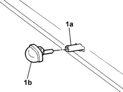

5050C10 rear window washer jet - r+r clean and/or position
- Path
- Procedures > 50 AUXILIARY UNITS > 5050 SCREEN WASHERS AND HEADLAMP WASH/WIPE > 5050C rear wash/wipe > 5050C10 rear window washer jet - r+r clean and/or position
- Kind
- repair procedure (removal / refitting; the operation number is the code)
- Applies to
- all engines; all production periods
- Interactive page
- https://sloeber94.github.io/elrnDB-fPnd/en/#/2752920
Applies to: all engines; all production periods
 Removing
Removing
 Refitting
RefittingDisconnect the battery negative terminal.
Remove the third brake light complete with trim as shown in the procedure:
5550D16 third stop light - r+r
Working from inside the third brake light seating, press the retaining clips and remove the rear window washer jet.
1. Disconnect the pipe (1a) and remove the rear window washer jet (1b).

Applies to: all engines; all production periods
Refitting
RemovingConnect the pipe to the rear window washer jet.
Fit the rear window washer jet in its seating and check that it is secure.
Fit the third brake light complete with trim as shown in the procedure:
5550D16 third stop light - r+r
Connect the battery negative terminal.